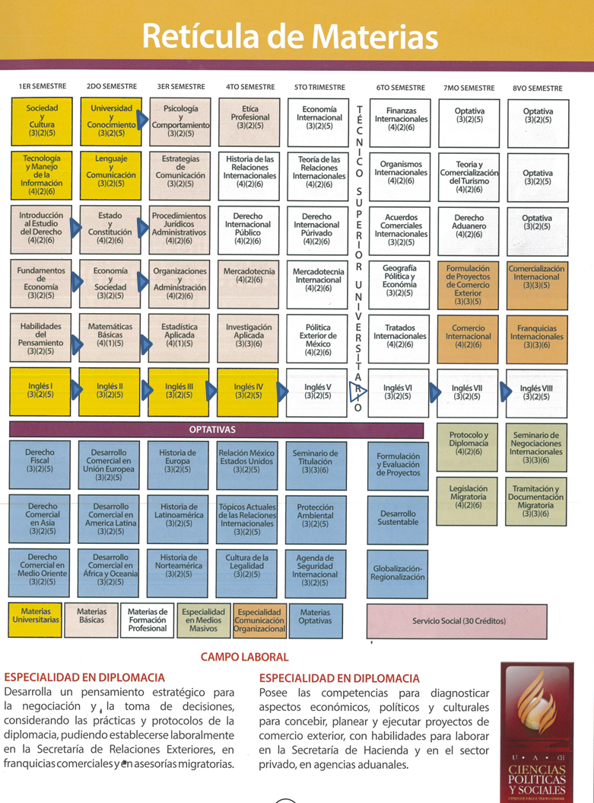
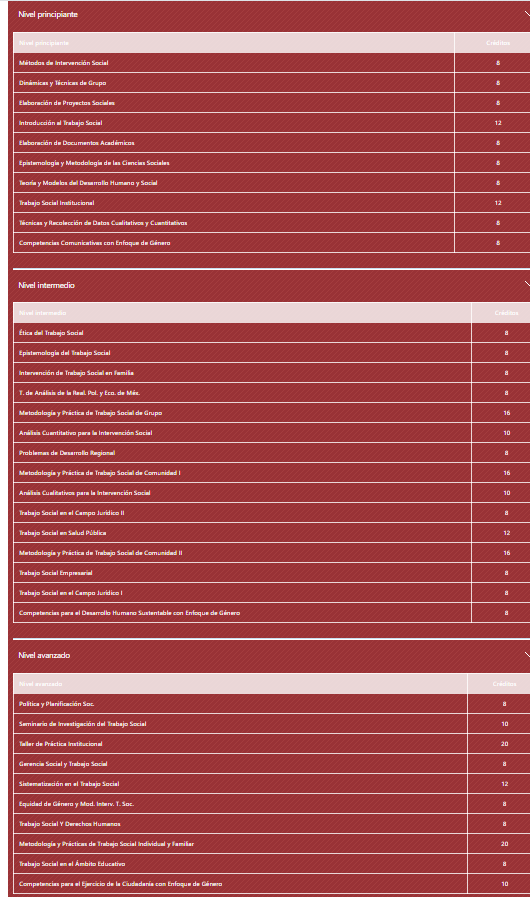

LRI
El programa de relaciones internacionales forma profesionistas que inciden en dos grandes vertientes del ámbito internacional: Fronteras y estudios regionales y estudios del desarrollo, donde se realiza un profundo análisis de la problemática que enfrenta el mundo en la actualidad sobre gobernanza transfronteriza, migración, negociaciones internacionales y desafíos del desarrollo. A través del estudio de los actores internacionales y la organización internacional, se impulsa el compromiso de generar condiciones de paz y justicia y la construcción de bases para el fortalecimiento de las instituciones. La vertiente de ciudades y comunidades sostenibles, se aborda desde la ciudadanía global y la cooperación internacional para el desarrollo.
Perfil de egreso:
El egresado contará con los conocimientos y manejo de instrumentos internacionales, los cuales le ayudarán al planteamiento y ejecución de acciones para la solución de problemas en los ámbitos: fronterizo, binacional, regional y global.
El internacionalista tendrá una sólida formación interdisciplinaria, serán profesionales en el arte de la negociación, contarán con bases para desarrollar investigación con un enfoque holístico, amplia visión y responsabilidad social, pudiendo ejercer tanto en el sector público, el privado, como en el tercer sector, en lo nacional y el ámbito transnacional.
Habilidades personales que se requieren:
Campo de trabajo: El campo laboral de los egresados del programa se asocia a la diplomacia internacional, a la investigación, a la docencia, a la consultoría, a la gestión pública, a la asesoría, y al emprendimiento.

La carrera de Trabajo Social está orientada en ayudar y mejorar el bienestar de las personas, llevando a cabo investigaciones sobre los problemas más usuales de la sociedad.
El estudio de Trabajo Social permite gestionar y actuar ante las necesidades de una comunidad y sus diferentes sectores de la población.
El egresado está capacitado para diseñar y ejecutar proyectos, elaborar planes de prevención, crear y participar en eventos solidarios y brindar nuevas opciones para transformar la realidad de los ciudadanos según sus mayores necesidades.
El Trabajador Social genera soluciones y orienta a las personas en momentos complejos de su vida, enseña nuevos recursos y medios para alcanzar metas y acompaña en las decisiones de los ciudadanos. A través de sus tareas fortalece a las comunidades en el corto y largo plazo, ayuda a la economía de una sociedad, recolecta información antes de presentar sus ideas, asesora a las personas con respecto a sus derechos y transforma una necesidad en un programa de acción solidaria.
La carrera requiere el estudio de diversas materias relacionadas al diagnostico y el análisis social y tiene una amplia salida laboral con posibilidad de desempeñarse en hospitales, escuelas, universidades, ministerios, centros comunitarios y consultorías judiciales. El egresado en Trabajo Social se siente cómodo con responsabilidades de ayuda humanitaria, intenta mejorar la vida diaria de los ciudadanos y tiene capacidad de planificación.
Preparación que tendrás al graduarte (perfil de egreso)
Conocimientos y habilidades necesarias para realizar investigación en este campo profesional; capacidad para intervenir en la realidad social, en el marco de las necesidades regionales, nacionales e internacionales, para incidir en el desarrollo y bienestar social a partir de tus conocimientos, capacidades y actitudes.
Campo laboral
En instituciones públicas, por ejemplo, Servicios Médicos Municipales, Hospital General, Hospital de la Mujer, Hospital Infantil, clínicas de medicina familiar, Hospital Civil Liberad para pacientes psiquiátricos, hospitales y clínicas del IMSS, ISSSTE, Jurisdicción Sanitaria, centro de atención de las adicciones, reclusorios; en hospitales privados, organizaciones de la sociedad civil y empresas privadas.

La carrera de turismo permite gestionar, asesorar y crear ideas para aumentar la actividad y el movimiento turístico a nivel local e internacional.
La carrera de turismo está orientada en personas que disfrutan de la planificación de viajes, con un interés a nivel comercial y la capacidad de mostrar empatía con el cliente y con nuevas culturas alrededor del mundo.
El formación en turismo prepara profesionales con la capacidad de administrar diferentes servicios relacionados al hospedaje o la compra de paquetes de viaje con planes predefinidos en uno o más destinos.
El egresado en turismo intenta cumplir el objetivo de satisfacer las necesidades del cliente según sus intereses, sus recursos económicos y su limitación en cuanto a tiempo del viaje.
El profesional en turismo se muestra cómodo en la investigación del mercado actual a nivel nacional e internacional, trabaja en equipo, actúa como guía y propone planes que garanticen la seguridad de los clientes. Se puede desempeñar en oficinas de turismo de una ciudad particular o representando al país, en agencias privadas que ofrecen pasaje e información de hoteles, en el Estado con el fin de promocionar el turismo nacional y como asesor particular para mejorar las condiciones actuales de los espacios más visitados de una ciudad y captar la atención de un mayor número de turistas.
Objetivo
Formar profesionistas de la Administración de Empresas Turísticas, capaces de investigar, planear y aprovechar el potencial turístico existente y brindar un servicio de alta calidad a los usuarios de este ramo, coadyuvando a la captación de divisas, generación de empleos e incremento de la infraestructura a partir de la inversión de capitales en el sector.
Perfil
Área ocupacional
Aunque ya tengo la idea de qué quiero estudiar, aún no sé a qué dedicarme, así que es muy probable que primero vaya a Estados Unidos para mientras que estudio inglés, buscar algo en lo que me pueda ocupar y espero con eso tener una experiencia más amplia y decidirme de una vez por todas.